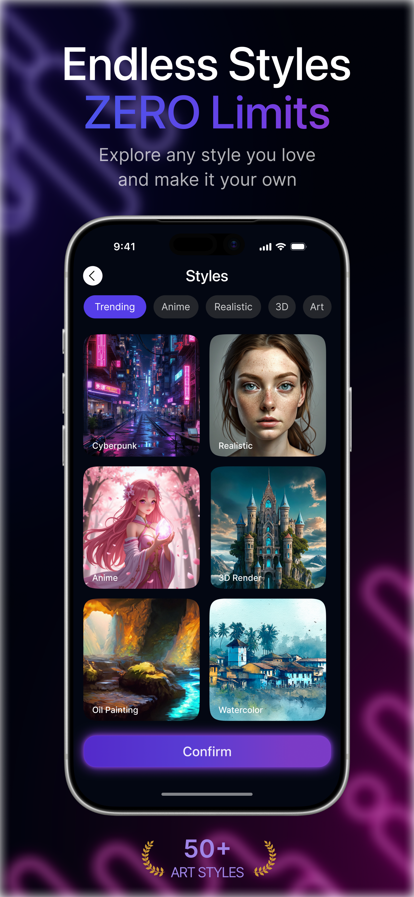
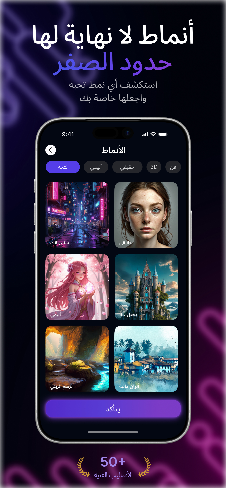
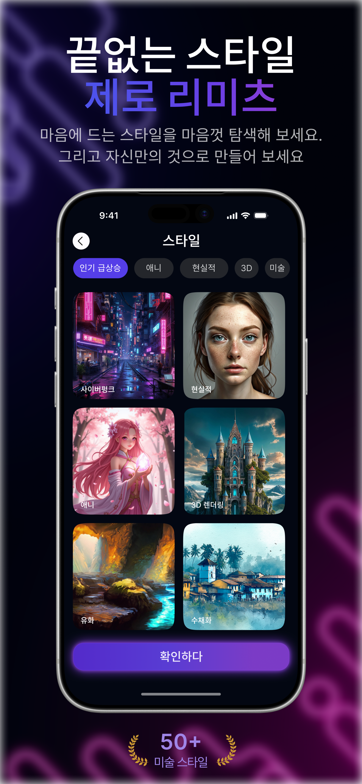
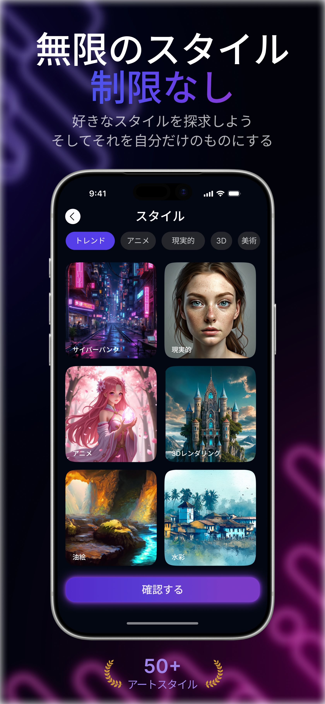

Вдохновить
Сильный образ сразу объясняет ценность: любая идея может стать картинкой.
MOBILE PRODUCT · AI · UX/UI
Мобильный сервис, который превращает текстовую идею в готовый визуал — от первого вдохновения до результата, которым хочется делиться.
Задача
Пользователь приходит не за настройками модели, а за визуальным ответом на свою идею. Поэтому продукт начинает с понятного обещания, показывает результат ещё до сложных решений и ведёт к первому запросу без перегрузки техническими деталями.
Ключевой сценарий
Каждый экран отвечает на один вопрос: что умеет сервис, какую идею создать, как дождаться результата и как выбрать формат работы дальше.
Сильный образ сразу объясняет ценность: любая идея может стать картинкой.

Большое поле запроса становится центральным действием, а не скрытой функцией.

Экран ожидания сохраняет контекст запроса и превращает паузу в часть опыта.

Paywall появляется после демонстрации ценности и даёт ясный выбор формата доступа.
Интерфейс
Глубокий графитовый фон делает готовые изображения ярче, а фиолетовый акцент собирает все ключевые действия в один узнаваемый жест.


Локализация
Для App Store подготовлены локализованные промо-материалы на английском, арабском, корейском и японском. Система сохраняет узнаваемость продукта и учитывает особенности письма в каждом языке.




02 / Локализация — дизайн-логика
Базовый язык продукта и точка отсчёта для интерфейса. Английские глаголы в CTA остаются короткими, а более развёрнутые App Store-тексты проверяют, как сетка и переносы выдерживают расширение копирайта.
Справа налево меняется не только текст, но и сценарий считывания: навигация, иконки направления и порядок блоков требуют зеркальной логики. Пластичная, размашистая вязь арабского также потребовала большего воздуха в строках, бережной работы с выравниванием и проверки смешанных фрагментов — чисел, цен и латиницы.
Хангыль строится из компактных слоговых блоков и формирует более плотный ритм, чем латиница. Поэтому важны увеличенный межстрочный интервал, предсказуемая ширина текстовых контейнеров и отсутствие случайных переносов, которые ломают читаемый рисунок фразы.
Комбинация кандзи, хираганы и катаканы даёт высокую смысловую плотность: короткая подпись может нести много значения. Интерфейс проверен на компактные названия, нейтральный трекинг и правила переноса, чтобы знаки препинания и служебные символы не оказывались в начале строки.
Результат
Дизайн связывает эмоциональный старт, создание изображения и доступ к расширенным возможностям в один последовательный сценарий. Яркий визуальный язык делает продукт узнаваемым, а интерфейс оставляет пользователю только одно решение за раз.